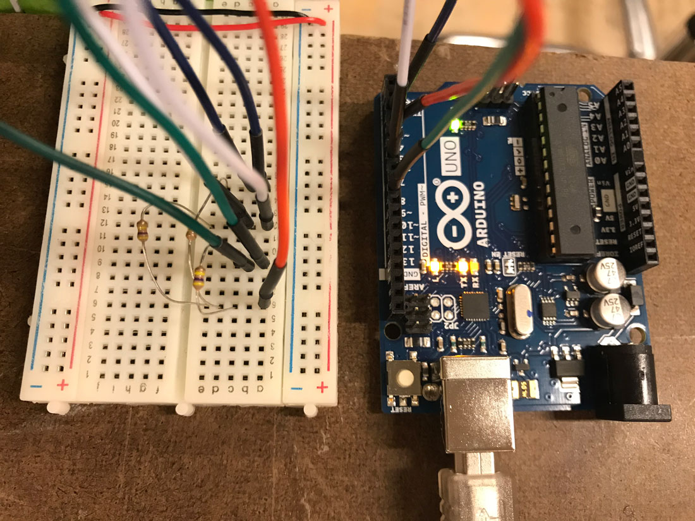
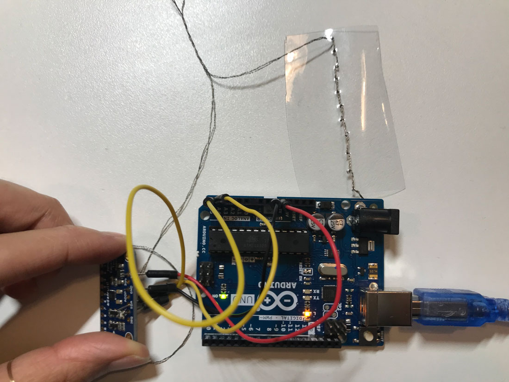

Week 9: Final Project Idea
Nov 6, 2018
In collaboration with Rashida Kamal.
Concept:
A pair of wearable NIME devices that trigger sound upon touch. The devices are in form of a jacket with various capacitive sensors sewn onto it. When the two participants wearing the device touch each others’ bodies, different sound is triggered (and possibly visuals, time permitting).
The piece plays on the difference in areas and intensity of touch depending on the comfort level of the relationship between the two people wearing the jackets. The hypothesis is that people who are more “deeply connected” will be willing to touch larger and more intimate areas of the body for longer periods of time. It will be also interesting to find out whether this wearable device, under the context of art, participants will be more willing to lower their boundaries and become more intimate with each other compared to themselves when not wearing the devices.
Experimenting with Capacitive Touch Sensors:
We hoped to use capacitive touch as a way of making the wearable have the sensitivity we desire. Today, we ran through a basic capacitive touch example using Paul Stoffregen’s Capacitive Touch library for Arduino. We wanted to test whether various capacitive touch sensors could act independently of each other (or if they suffered from a certain amount of interference).
Note that the value of resistance for the capacitive touch sensors varied across various tutorials we found online, but after some testing, we found that the 100K resistors worked fairly well for us.
Setup:
You can see our tests using three simple copper tape sensors below (along with the sensor readings we received from each of them).
We were pleased to see that there was little interference between sensors, but realized that whatever conductive material we used on the wearable would need to be well insulated from each other. We were pleased to see that the copper tape was fairly reactive to how much (or how hard) we touch the sensor.
Once we had a feel for how capacitive touch generally worked, we decided to tests some materials from the Soft Lab. We found a few things we thought might be conductive material: what looked to be dark conductive thread, a thicker silvery thread, and a light ribbon of woven material.
You can see our tests below:
It turned out that the silvery thread was not at all conductive, but we’re excited about the possibilities of the other two materials.
Next, we tested with the conductive thread with the MPR 121 capacitive touch breakout board. We bought some sheet clear plastic from Canal Plastic and sewed on a line of conductive thread.
Below is the video of our test:
One thing to note was the fact that when touching the pins of the breakout board with our fingers, it was recognized as a “touch”. We realized that we needed to insulate (possibly with hot glue) between the pins of the breakout board, so that the threads coming out from the board do not cross each other.
Another thing to note is that Adafruit’s MPR 121 capacitive touch library’s test sketch only differentiated between a “touch” and “release”. We would like to figure out if there are other functions that the library provides that will give us the raw numbers of the readings so that we can make more final distinctions of different intensities of the touch.
Plans for next week:
- Write code for triggering sound
- Decide what kind of sound / music that we want to create
- If we decide to use sound samples, collect assets
- Decide what environment we want to use for coding
- Possibilities are: p5.js / tone.js for sound, p5.js / three.js / processing / openFrameworks for visuals (time permitting)
- Start thinking about the design of the jacket
- Research online for simple jacket blueprints
- Ask classmates with fashion design experience for their advice